OAuth Utilities¶
Table of Contents¶
Release Notes¶
Version |
Date |
Notes |
|---|---|---|
1.0.0 |
07/2022 |
Initial Release |
Overview¶
OAuth utilities
The OAuth Utilities package provides tools and utilities to support OAuth for IBM SOAR apps.
Key Features¶
A utility to generate an OAuth 2.0 authorization code flow refresh token for an IBM SOAR app.
Requirements¶
Python Environment¶
Both Python 3.6 and python 3.9 are supported. Additional package dependencies might exist for each of these packages:
Jinja2>=30.0.0
six>=39.0.0
urllib3>=0.18.2
requests>=0.18.2
flask>=2.0.3
pyOpenssl>=0.18.2
click>=8.0.4
Prerequisites¶
Utility
oauth2_generate_refresh_token: An OAuth 2.0 identity provider service with an app or project configured to allow user access to a 3rd party application.
Configuration¶
Utility
oauth2_generate_refresh_token: The following settings must be provided for the OAuth 2.0 service.
client_id
client_secret
scope
token_url
auth_url
Permission¶
Utility
oauth2_generate_refresh_token: The provided OAuth 2.0 configuration settings must have required access to the 3rd party app.
Installation¶
Install¶
You can download the oauth-utils app packages from the IBM Resilient Community or IBM X-Force App Exchange.
Complete the following steps to install the oauth-utils Python package:
Ensure that your python environment is up to date, as follows:
pip install --upgrade pip
pip install --upgrade setuptools
Go to the folder where the downloaded app is located and unzip. For example:
unzip oauth-utils-1.0.0-00001.zip
The app zip file contains a python package. Install the package using the following command:
pip install --upgrade oauth-utils-1.0.0-00001.tar.gz
If running in browser mode, install optional python modules using the following command:
pip install --upgrade oauth-utils-1.0.0-00001.tar.gz[browser]
Package Configuration¶
Utility: oauth2_generate_refresh_token¶
Required Settings¶
The following table provides the settings required to execute this utility. These settings are either read from an app.config file or provided as command-line arguments.
Setting/Argument |
Required |
Example |
Cli usage |
Description |
|---|---|---|---|---|
client_id |
Yes |
|
|
OAuth 2.0 application or project client ID. |
client_secret |
Yes |
|
|
OAuth 2.0 application or project client Secret. |
scope |
Yes |
|
|
OAuth 2.0 application or project scope. |
token_url |
Yes |
|
|
OAuth 2.0 application or project token url. |
auth_url |
Yes |
|
|
OAuth 2.0 application or project authorization url. |
NOTE: The settings are all read either from an app.config file or as command-line arguments. These operations are mutually exclusive.
NOTE: The settings are read from an app.config file if one is located in the environment. Alternative app.config files can be selected using the -c or –config_file option.
Arguments¶
The following table provides additional optional command-line arguments which can be used to execute this utility.
Argument |
Required |
Example |
Description |
|---|---|---|---|
browser |
No |
|
Browser mode. Use a browser to control the flow and run a callback listener. |
config_file |
No |
|
Location of app.config file to override default. |
port |
No |
|
TCP port used for callback url and listener (default is 8080). |
timeout |
No |
|
Timeout callback listener after timeout (seconds). |
app_name |
No |
|
The app name to read if more than one app is defined in an app.config file. |
Usage¶
The OAuth Utilities for SOAR app supplies various subcommands to help with OAuth support for apps in a SOAR environment.
$ oauth-utils
usage:
$ oauth-utils <subcommand> ...
$ oauth-utils -v <subcommand> ...
$ oauth-utils oauth2_generate_refresh_token
$ oauth-utils oauth2_generate_refresh_token -b
$ oauth-utils oauth2_generate_refresh_token -c <path_to_config_file>/app.config -a <app_name>
$ oauth-utils -h
Tools to manage OAuth for IBM SOAR apps
optional arguments:
-h, --help show this help message and exit
-v, --verbose Set the log level to DEBUG
Utility: oauth2_generate_refresh_token¶
A utility to generate a refresh token for an OAuth 2.0 service (to be used with an IBM SOAR app).
usage: $ oauth-utils <subcommand> ...
$ oauth-utils -v <subcommand> ...
$ oauth-utils oauth2_generate_refresh_token
$ oauth-utils oauth2_generate_refresh_token -b
$ oauth-utils oauth2_generate_refresh_token -c <path_to_config_file>/app.config -a <app_name>
$ oauth-utils -h oauth2_generate_refresh_token
[-h] [-c CONFIG_FILE] [-t TIMEOUT] [-b] [-a APP_NAME] [-p PORT]
[-ci CLIENT_ID] [-cs CLIENT_SECRET] [-sc SCOPE] [-tu TOKEN_URL]
[-au AUTH_URL]
A utility to generate a refresh token for an OAuth 2.0 service (to be used with an IBM SOAR app).
The parameters used for the OAuth 2.0 service can be taken either from an app.config file or manually from the command line.
(For further information please refer to the auth_utils documentation.)
optional arguments:
-h, --help show this help message and exit
-c CONFIG_FILE, --config_file CONFIG_FILE
Location of app.config file
-t TIMEOUT, --timeout TIMEOUT Timeout callback listener after timeout (seconds)
-b, --browser Use browser and listener
-a APP_NAME, --app_name APP_NAME
Specify the app name
-p PORT, --port PORT Specify port for callback url and listener
-ci CLIENT_ID, --client_id CLIENT_ID
Specify OAuth 2.0 application client ID
-cs CLIENT_SECRET, --client_secret CLIENT_SECRET
Specify OAuth 2.0 application client secret
-sc SCOPE, --scope SCOPE Specify OAuth 2.0 application scope
-tu TOKEN_URL, --token_url TOKEN_URL
Specify OAuth 2.0 application token url
-au AUTH_URL, --auth_url AUTH_URL
Specify OAuth 2.0 application authorization url
Configure OAuth 2.0 credentials¶
To use the oauth2_generate_refresh_token utility, set up an app or project for an OAuth 2.0 identity provider service from which you can get the required configuration settings, such as:
client_id
client_secret
scope
token_url
auth_url
The setup procedure varies depending on the provider. This document provides examples for 2 well known services Google Gmail and Microsoft Outlook 365. These examples can be used to send email using SMTP.
Google Gmail¶
Endpoints¶
Google Authorization endpoint - used by client to obtain authorization from the resource owner.
auth_url=https://accounts.google.com/o/oauth2/auth
Google Token endpoint - used by client to exchange an authorization grant or refresh token for an access token.
token_url=https://accounts.google.com/o/oauth2/token
Create the new project.¶
As the SMTP email user, log in to Google cloud and create a Google cloud project.
Give your project a name, change the project ID if needed, and click the
Createbutton.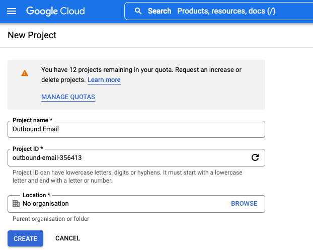
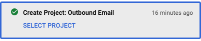
Configure OAuth Consent Screen.¶
In the APIs and Services section, click OAuth Consent Screen and set the user type to
External. Click onCreate.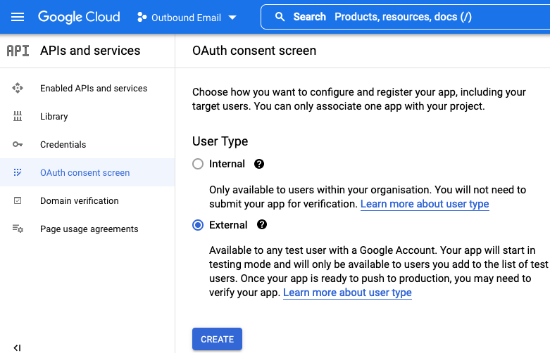
Enter a name for your application and provide an email address where Google might contact you.
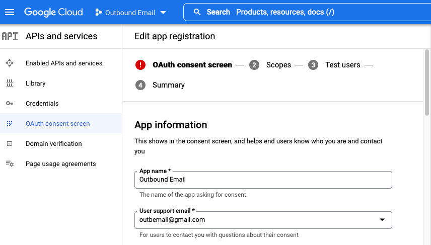
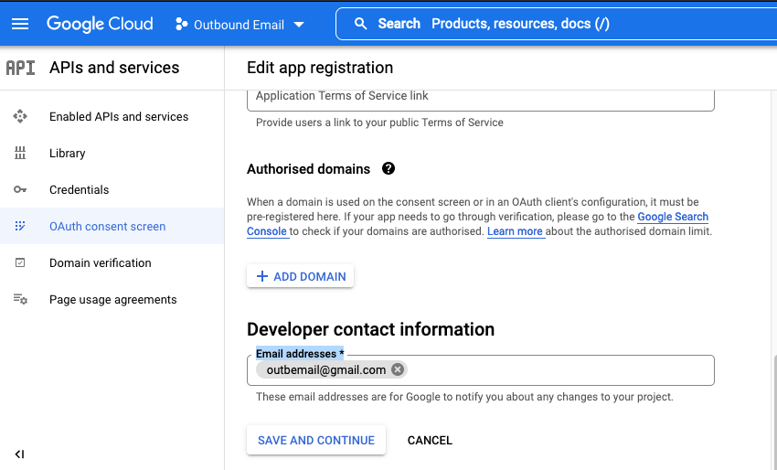
Provide one or more Scopes for Google APIs. Click the
Add Or Remove Scopesbutton and add https://mail.google.com/ to the list of scopes. ClickSaveandContinue.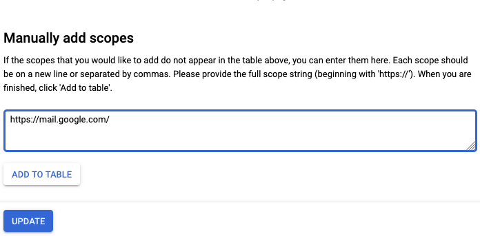
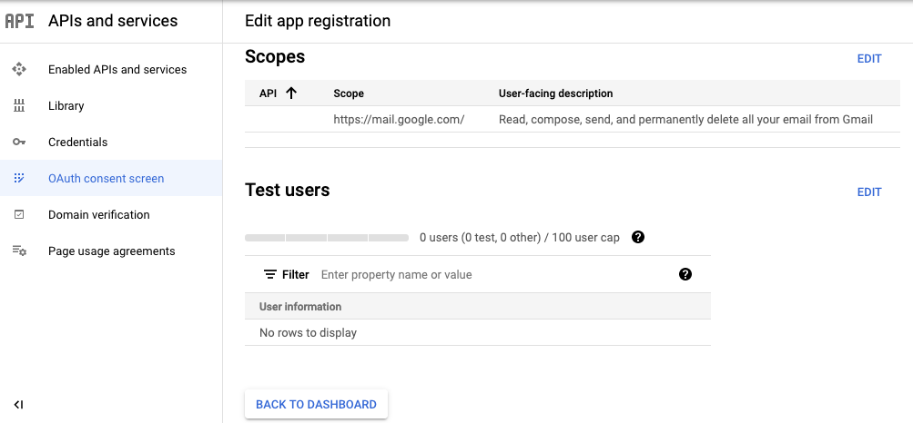
Since a User Type of
Externalis used, you need to add a user who has access to the app. In this example, the test user is the same as the app user. ClickAdd Users, and add the user. ClickSaveandContinue.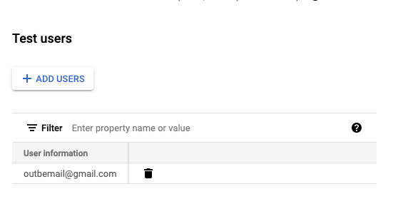
Configure Credentials.¶
In the APIs & Services section, click
Credentialsand then clickCreate credentials.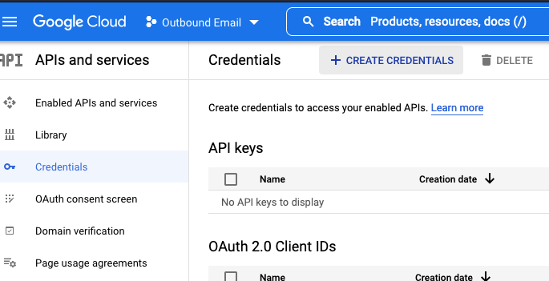
Select
OAuth Client IDto create a new client ID then selectDesktop app. The client ID is used to verify application identify to Google’s OAuth servers.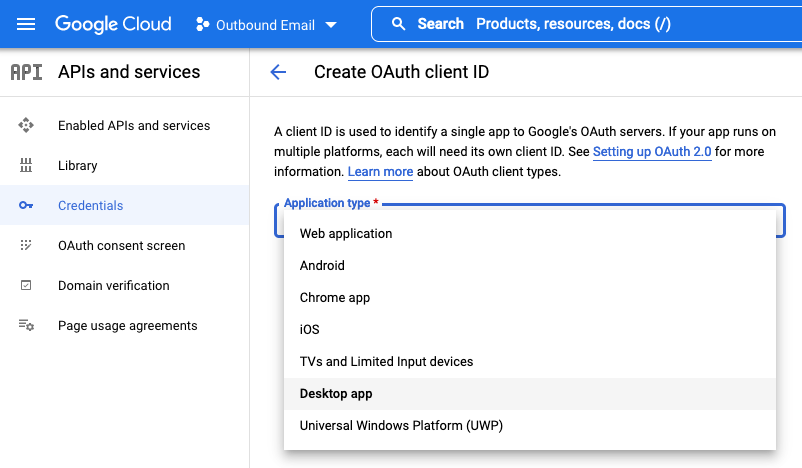 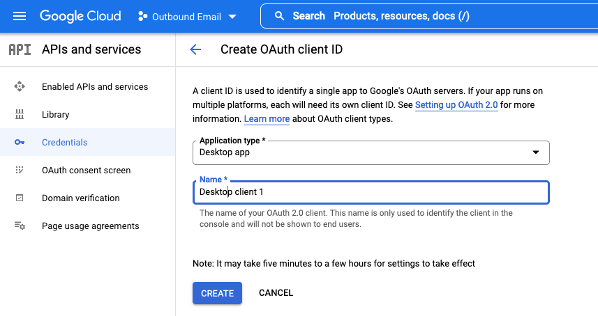
When the OAuth client is created you are presented with a screen showing your client ID and secret.
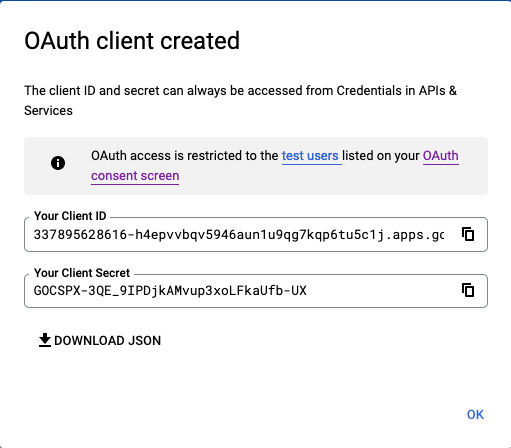
You can now add these credentials and scope to an app.config file or alternatively use as command-line arguments for the oauth2_generate_refresh_token utility.
client_id=337895628616-h4epvvbqv5946aun1u9qg7kqp6tu5c1j.apps.googleusercontent.com
client_secret=ABCDEF-1AB_2ABCdeFGhij3abABabCde-AB
scope=https://mail.google.com/
token_url=https://accounts.google.com/o/oauth2/token
auth_url=https://accounts.google.com/o/oauth2/auth
Ensure you are logged out of any Google accounts.
Execute the
oauth2_generate_refresh_tokenutility using the new credentials as command line arguments.
$ oauth-utils oauth2_generate_refresh_token -ci=337895628616-h4epvvbqv5946aun1u9qg7kqp6tu5c1j.apps.googleusercontent.com -cs=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 -sc=https://mail.google.com/ -tu=https://accounts.google.com/o/oauth2/token -au=https://accounts.google.com/o/oauth2/auth
Running from command line.
Using OAuth2 discrete settings from command-line arguments.
To authorize a token, copy the following URL into a browser and follow the directions then enter the generated callback URL below:
https://accounts.google.com/o/oauth2/auth?state=6a3290f368de76e0dc83d7a380ca91e8950a57ff2aabc94c706b3418743e2743&scope=https%3A%2F%2Fmail.google.com%2F&client_id=337895628616-h4epvvbqv5946aun1u9qg7kqp6tu5c1j.apps.googleusercontent.com&response_type=code&response_mode=query&redirect_uri=https%3A%2F%2Flocalhost%3A8080%2Fcallback
Enter callback URL:
Enter the URL in a browser, log in as the SMTP email user, and follow the directions by clicking
Continuein each presented screen.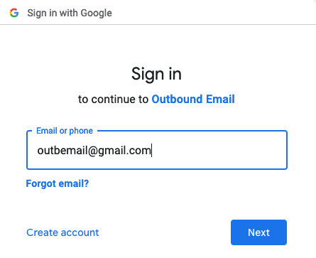
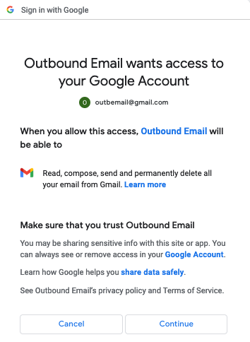
Eventually the user is presented with an
Unable to connectmessage in the browser and a callback URL in the browser location window.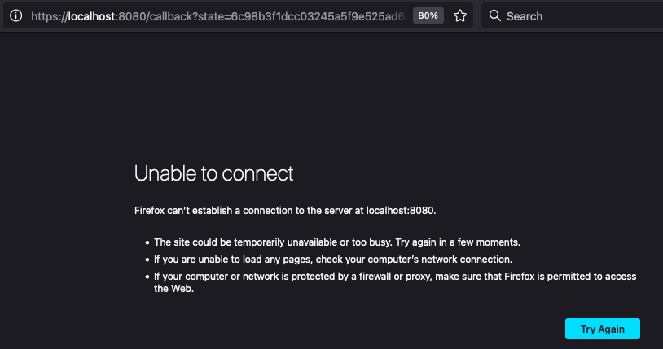
Enter the callback address from the browser location window on the command line.
Enter callback URL: https://localhost:8080/callback?state=6c98b3f1dcc03245a5f9e525ad6ac11983dc26dadebeb497492462aa166e19f0&code=4/0AdQt8qjMgTnOh42tSkJRafz_uNmJIvOLsanTp9NUoj1YDBRr7oW94nqXADDHD1BIe6Bz6g&scope=https://mail.google.com/
refresh_token=1//07JEwfJ_7KNbWCgYIARAAGAcSNwF-L9IrH71Z4sT_VsmL4kO3rSaW4fEKKTpetFVhf6dfxDBuPxqB-KkE2DJEo_8Xo1hOkfP_RyY
Add the resultant
refresh_tokento the app.config file for the required app.
NOTE: In the example, we used a test user with User Type of External. Selecting User Type Internal allows the application to access the Google API without having to go through the verification process.
Microsoft Outlook 365¶
Endpoints¶
Microsoft Authorization endpoint - used by client to obtain authorization from the resource owner.
auth_url=https://login.microsoftonline.com/<tenant_id>/oauth2/v2.0/authorize
Microsoft Token endpoint - used by client to exchange an authorization grant or refresh token for an access token.
token_url=https://login.microsoftonline.com/<tenant_id>/oauth2/v2.0/token
App Registration¶
As the SMTP email user, log in to the Microsoft Azure Portal and authenticate.
Under
Azure services, click onAzure Active Directory.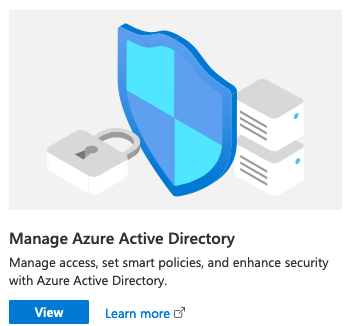
Click on
App Registrations>New Registration.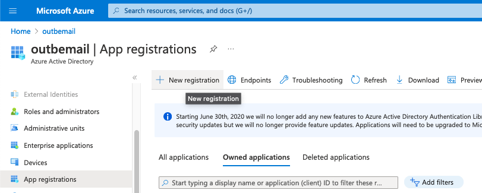
Give your application a name. For
Redirect URIselectWeband enterhttps://localhost:8080/callback. ClickRegister.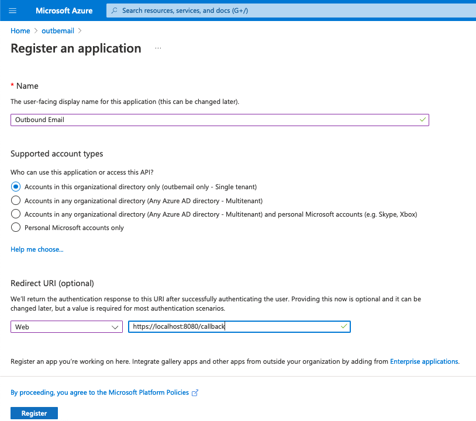
Copy and save the Application (client) ID and Directory (tenant) ID locally.
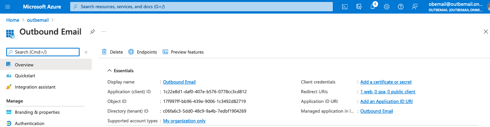
Authentication¶
Under
Manageon the left menu, selectAuthentication.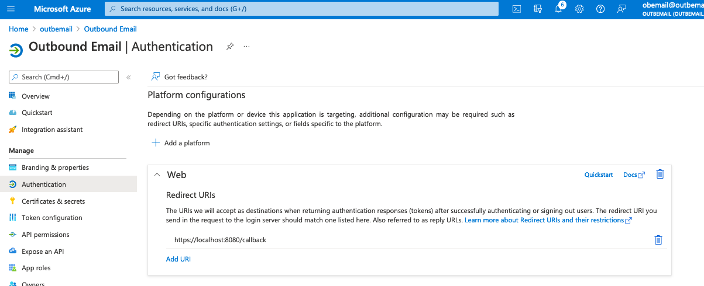
Select
YesforEnable the following mobile and desktop flowsthen clickSave.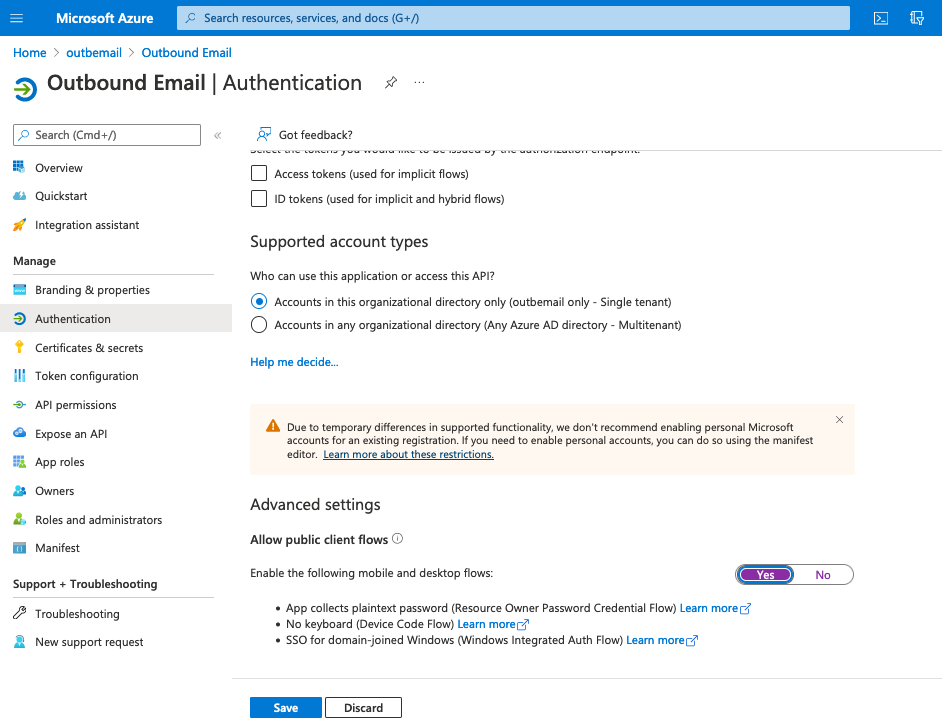
API Permissions¶
On the left side under
Manage, selectAPI Permissions.Click
Add a permission.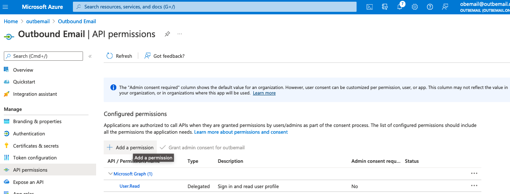
On the Request API permission screen, select Microsoft Graph.
In Graph API, choose Delegated permissions.
Add the following permissions.
offline_access
SMTP.Send
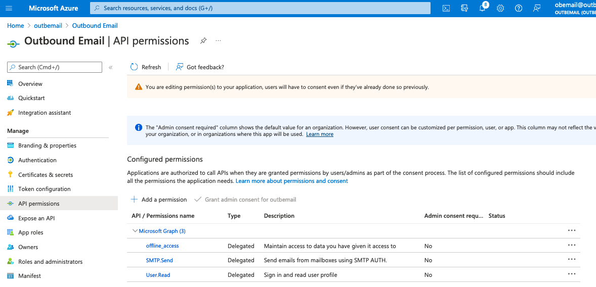
You need an admin user account to
Grant admin consent for <user>to enable these permissions.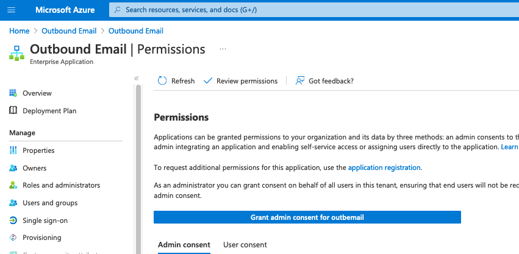
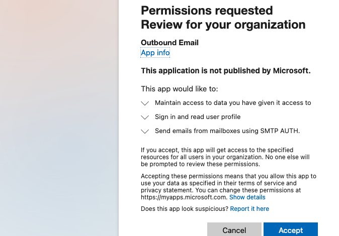
Create client secret¶
On the left side under
Manage, selectCertificate and secrets.Click
New client secret.Enter a name for the client secret. 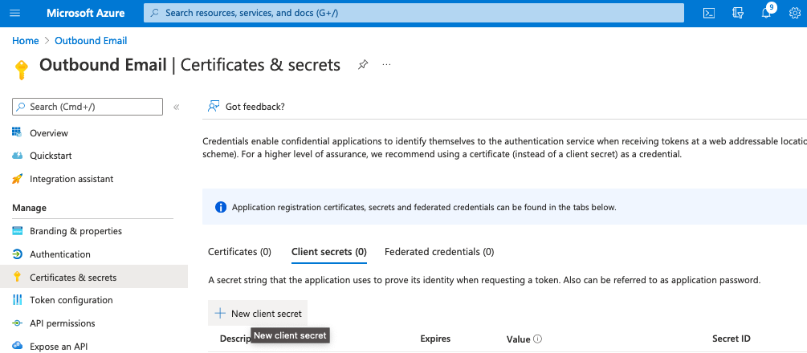
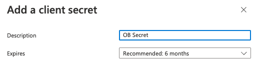
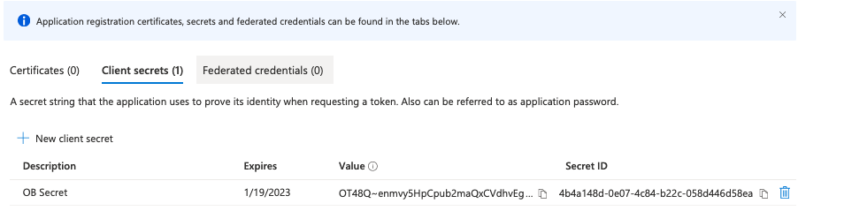
Save the secret
Valuelocally. This is be used as the value for theclient_secretsetting/argument.
Authenticated SMTP¶
Log in to Microsoft 365 admin center as an admin user and go to
Users>Active users.Select the SMTP user, and click
Mail.In the Email apps section, click Manage email apps.
Verify the
Authenticated SMTPsetting is checked.Click
Save changes.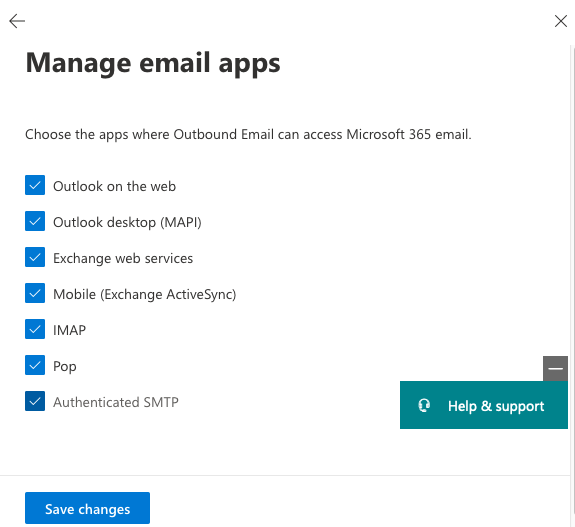
You can now add credentials and scope obtained above to an app.config file or alternatively use as command line arguments for the oauth2_generate_refresh_token utility.
client_id=1c22e8d1-daf0-407e-b576-0778cc3cd812
client_secret=AB12A~abcde5AbCabc2maQxCVdhvEgowkT1ABcDe
scope=offline_access https://outlook.office365.com/SMTP.Send
token_url=https://login.microsoftonline.com/c06fa6c3-5dd0-48c9-9a4b-7edbf1904269/oauth2/v2.0/token
auth_url=https://login.microsoftonline.com/c06fa6c3-5dd0-48c9-9a4b-7edbf1904269/oauth2/v2.0/authorize
Ensure you are logged out of any Microsoft accounts.
Using the browser mode option, execute the
oauth2_generate_refresh_tokenutility using the new credentials in the app.config file.
$ oauth-utils oauth2_generate_refresh_token -b
Running with callback listener and web browser.
Reading OAuth2 settings from app.config file /Users/johnpren/.resilient/app.config.
/Users/johnpren/ws/venv_3.6.8_oauth-utils/lib/python3.6/site-packages/werkzeug/serving.py:469: CryptographyDeprecationWarning: Python 3.6 is no longer supported by the Python core team. Therefore, support for it is deprecated in cryptography and will be removed in a future release.
from cryptography import x509
Starting callback listener on port 8080.
Starting browser.
A web browser is launched, and the rest of the process is be completed using the browser.
In the browser, sign in as the SMTP email user.
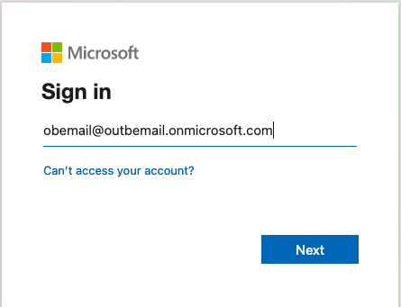
Follow the directions by clicking
Accept.
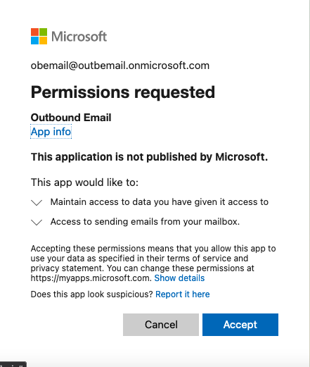
The browser is redirected to the callback URL (default port 8080) and is processed by a local listener.
If you are satisfied that it is redirected to the correct location, click
Accept the Risk and Continue.
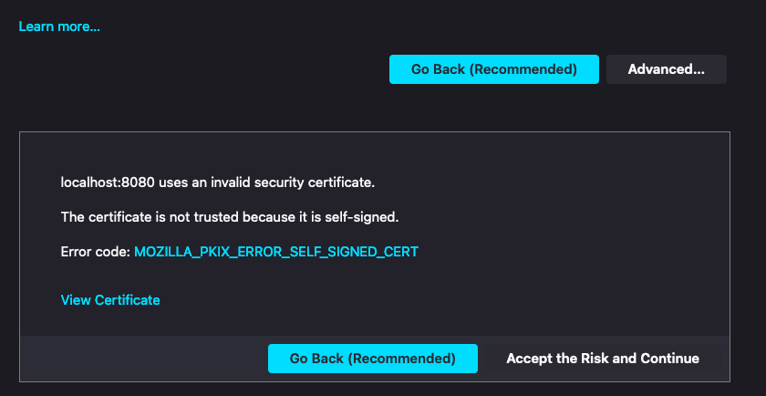
A refresh token is displayed in the browser.
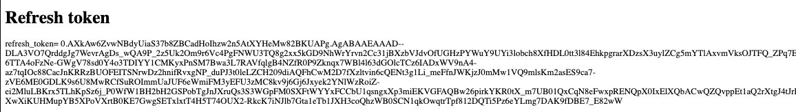
Add the resultant
refresh_tokento the app.config file for the required app.
Troubleshooting & Support¶
Refer to the documentation listed in the Requirements section for troubleshooting information.
For Support¶
This is a IBM Community provided package. Please search the Community ibm.biz/soarcommunity for assistance.